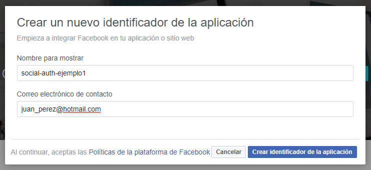
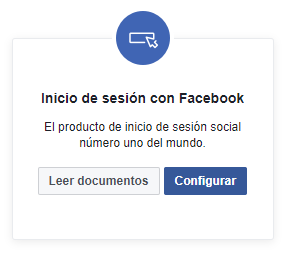
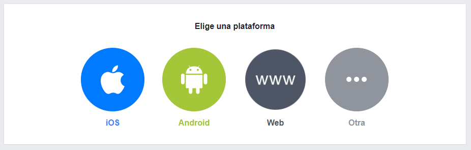
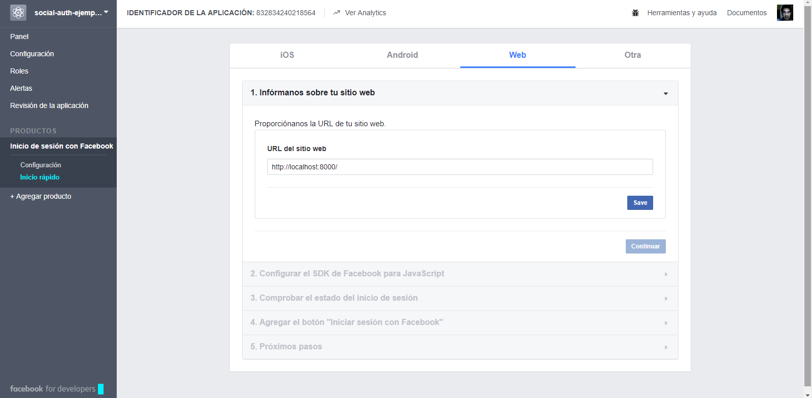
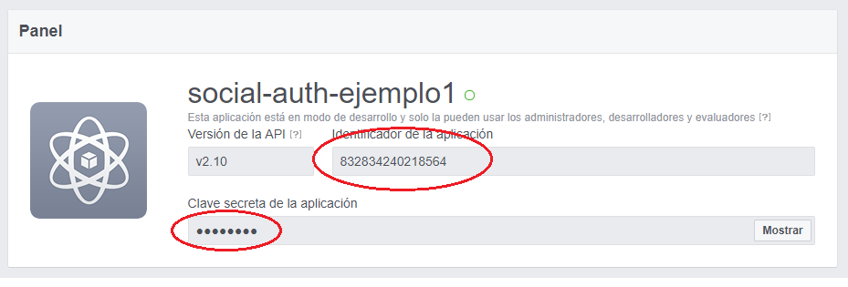
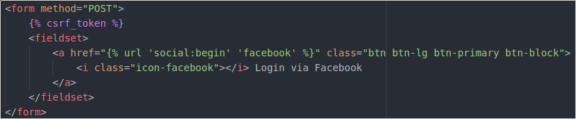
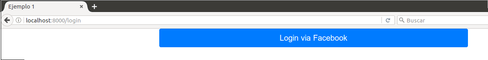
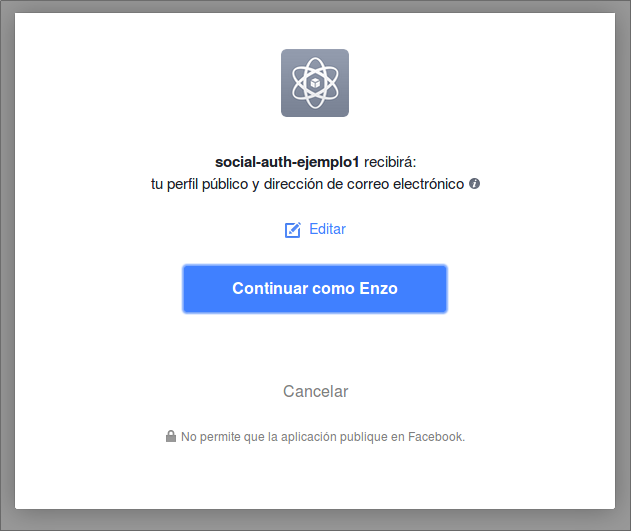
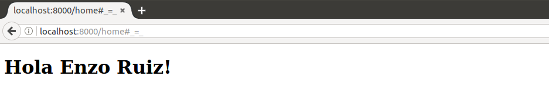

Introducción
Comenzamos esta lista de posts, con un ejemplo sencillo y al mismo tiempo muy útil para nuestros proyectos desarrollados en Django.
Utilizando 'python-social-auth', permitiremos a nuestros usuarios registrarse con su cuenta de Facebook en un solo click.
Nota: Este ejemplo esta desarrollado con Django 1.11.5 y Python 3.5.2
Ingredientes
- social-auth-core
- social-auth-app-django
Preparación
-
Paso 1: Instalación de librerías
pip install social-auth-core
pip install social-auth-app-django -
Paso 2: Crear aplicación en Facebook Developers
Vamos a facebook developers y creamos una aplicación.
Asignamos un nombre y correo electrónico a nuestra aplicación.

Luego buscamos la opción de 'Inicio de sesión con Facebook'

A continuación seleccionamos la plataforma 'Web'

Ahora tenemos que decirle a nuestra aplicación que SOLO acepte peticiones de algún lugar en específico.
Este ejemplo se desarrolla en localhost usando el puerto 8000. Entonces colocaremos 'http://localhost:8000/'
En el caso que tengamos nuestro proyecto en producción, tendríamos que colocar el nombre de nuestro dominio.
No se olviden de guardar...

Regresamos a nuestro Panel principal.
Y ahora guarda bien tu 'Identificador de la aplicación' y 'Clave secreta de la aplicación', ya que las necesitaremos en nuestro proyecto.
 -
Paso 3: Configuración de 'social-auth' en nuestro proyecto
Archivo: settings.py
Agregar 'social_django' en INSTALLED_APPS
INSTALLED_APPS = [
'django.contrib.admin',
'django.contrib.auth',
'django.contrib.contenttypes',
'django.contrib.sessions',
'django.contrib.messages',
'django.contrib.staticfiles',
'social_django',
]Agregar los backends de las redes sociales que utilizaremos en el proyecto.
En nuestro caso solo de Facebook.
AUTHENTICATION_BACKENDS = (
'social_core.backends.facebook.FacebookOAuth2',
'django.contrib.auth.backends.ModelBackend',
)Ahora agregamos la secuencia de 'pipelines' que ejecutara 'social-auth' cuando un usuario desea registrarse.
Podemos agregar nuestro propio 'pipeline' antes, en medio ó después de los pipeline que vienen por defecto, para modificar el comportamiento del registro.
A mas detalle la documentación ;).
SOCIAL_AUTH_PIPELINE = (
'social_core.pipeline.social_auth.social_details',
'social_core.pipeline.social_auth.social_uid',
'social_core.pipeline.social_auth.social_user',
'social_core.pipeline.user.get_username',
'social_core.pipeline.user.create_user',
'social_core.pipeline.social_auth.associate_user',
'social_core.pipeline.social_auth.load_extra_data',
'social_core.pipeline.user.user_details',
'social_core.pipeline.social_auth.associate_by_email',
)Definimos también el alcance de los 'fields' que necesitamos de la cuenta de Facebook del futuro usuario.
Además podemos definir la 'url' luego que el usuario se logueo satisfactoriamente.
Esto es algo básico pero existe mas configuración para 'social-auth'.
SOCIAL_AUTH_LOGIN_REDIRECT_URL = '/home'
SOCIAL_AUTH_FACEBOOK_SCOPE = ['email']
SOCIAL_AUTH_FACEBOOK_PROFILE_EXTRA_PARAMS = {
'fields': 'id, email, last_name, first_name',
}Y por último pero no menos importante.
Tenemos que colocar las llaves secretas que nos da la aplicación de Facebook Developers.
SOCIAL_AUTH_FACEBOOK_KEY => Identificador de la aplicación
SOCIAL_AUTH_FACEBOOK_SECRET => Clave secreta de la aplicación
SOCIAL_AUTH_FACEBOOK_KEY = '832834240218564' SOCIAL_AUTH_FACEBOOK_SECRET = '8083396ebdd4f9f2051913960643f04a' -
Paso 4 (Final): Definiendo la 'url' de 'social-auth' y llamándola desde un formulario
Archivo urls.py
Agregamos la 'url' necesaria para llamar 'social-auth' desde un botón de Login
url('', include('social_django.urls', namespace='social')),Archivo login.html
Creamos un pequeño formulario con un botón que llamará la 'url' que definimos anteriormente.

Resultado
Ahora cuando ingresamos a nuestra vista de 'login' y hacemos click en el botón con la 'url' de 'social-auth'.

Nos llevará a nuestra cuenta de Facebook pidiendo permiso para que pueda brindar la data pública a nuestro proyecto en Django.

Luego cuando aceptamos, nos rediccionará a la 'url' del 'social-auth', que definimos en el 'settings.py'.

Resumen Final
Gracias a 'social-auth' no solo podemos usar Facebook como autenticador, sino también diferentes redes sociales como Twitter, Github, etc.
Este fue un ejemplo muy práctico y sencillo para mostrar la forma de conectar Facebook como autenticador en nuestros proyectos desarrollados en Django.
Recuerda que siempre hay que revisar la documentación oficial para extender el uso de esta librería en nuestros proyectos.
Aca les dejo el código de este ejemplo.
Espero les haya servido, saludos :)!